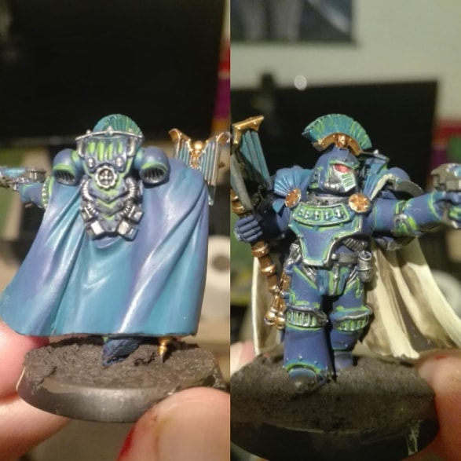
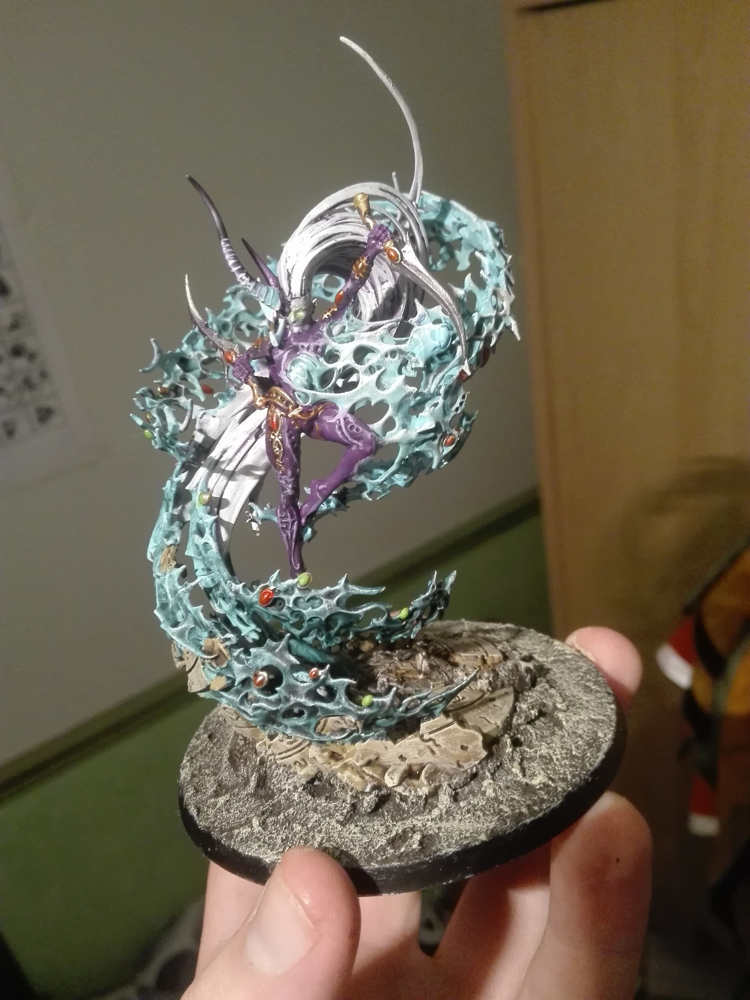
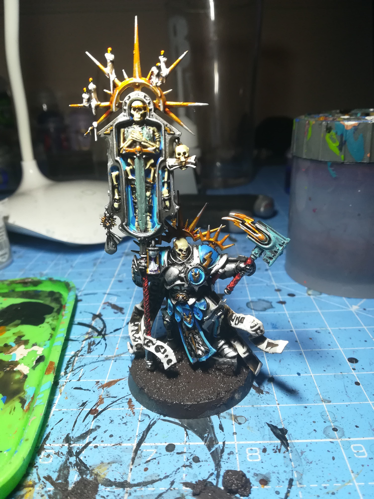

My name is Alex and I have been collecting and painting Warhammer for many
years.
This webstie is a way for me to show off many of my projects from
over the years.
I liked this one a lot as I feel like it was the first character I painted without any external help, like a tutorial that still turned out very well.
This one I like as it is the most complex model I've had to paint to date, and I am so pleased with the detail I managed to get onto this model.
This is one of my more recent projects, and I am pleased with how all the small deatilas on the parchment and candles turned out, and I look forward to painting more stormcast.
This website was created by Alex Carley